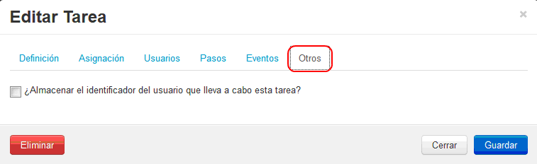

2.3.4 Diseñador del proceso
El diseñador del proceso brinda diversas herramientas para el modelamiento de procesos del trámite a digitalizar, aplicar reglas de negocio entre las tareas de los procesos. Para ingresar deberá presionar sobre el botón Diseñador, indicado en el recuadro en rojo siguiente:
Figura 37: "Ventana Diseñador de Proceso"
Con esto se abrirá la hoja de trabajo del modelo de procesos, con el respectivo nombre del proceso y una barra de herramientas ubicada en la esquina superior derecha de la hoja de trabajo, tal como se ve a continuación:
Figura 38: "Diseñador de Modelo de Procesos - Barra de Herramientas"
Al hacer clic sobre el nombre del modelo de proceso por defecto el sistema lo nombra como Proceso, se desplegará una ventana en la cual podrá modificar el nombre del modelo de proceso, como nos encontramos ejemplificando para un proceso de para CPA, lo llamaremos Cupón para Afiliados a CPA como se ve en la siguiente imagen:
Luego simplemente presione el botón Guardar y el nuevo nombre del modelo de proceso habrá sido asignado.
Dentro de barra de herramientas existen diversos iconos funcionales, los cuales se detallan a continuación:
|
Tarea Permite generar una nueva tarea en el modelo de proceso. Por ejemplo: Inscripción del Postulante, Evaluación de Beca, solicitud de cupón, etc.
Es importante destacar que todo modelo de procesos debe tener asociada de manera obligatoria una tarea de inicio, y a su vez puede tener una o varias tareas de termino.
Forma de asignación: Haga clic sobre el icono Tarea, y luego pulse en cualquier lugar de la hoja de trabajo.
Forma de configuración y parametrización: Haga doble clic sobre la tarea que desea configurar existente en hoja de trabajo. Al hacer esto se abrirá una pantalla que permitirá Editar la Tarea, tal como se ve en la siguiente imagen:
La edición de tareas se encuentra subdividida en 6 pestañas, explicadas a continuación:
Pestaña Definición1. Pestaña Definición: en esta pestaña podrá definir el nombre de la tarea, y si corresponde a una tarea inicial y/o final. Considere que siempre debe existir una tarea inicial en su modelo de procesos siendo única, mientras que pude definir una o múltiples tareas de fin, una vez realizado los cambios haga clic en Guardar. A continuación un ejemplo de la visualización de la Pestaña Definición:
Existen 3 formas de activar o desactivar tareas, siendo las siguiente:
Adicionalmente, existe también la posibilidad de exponer el trámite para que sea accesible por otros BPMS o sistemas externos, esto solo se puede realizar en una tarea que es marcada como tarea de inicio, lo cual se muestra en la siguiente imagen:
Pestana Asignación2. Pestaña Asignación: en esta pestaña, podrá definir la forma de asignar responsables a la tarea e indicar si requiere notificar mediante correo electrónico al o los responsables asignados, pudiendo ser un usuario en particular o un grupo de usuarios.
Existen 4 formas de asignación de tareas, siendo las siguiente:
La ventana de asignación se visualiza como sigue:
Pestaña Usuarios3. Pestaña Usuarios: en esta pestaña podrá definir el nivel de acceso hacia la tarea, siendo tres:
La ventana de Usuarios se visualiza como sigue:
Pestaña Pasos4. Pestaña Pasos: permite asignar formularios de trabajo a la tarea con su respectivo orden, condiciones de despliegue y modo despliegue. Considere que para asignar los formularios, deben estar previamente elaborados.
Tal como se desarrollo en el manual el formulario principal (Sección Generación de Formularios para el Proceso), utilizaremos seleccionaremos este formulario y presionaremos el botón para añadirlo dentro del paso, si se requieren formularios adicionales sólo se debe seleccionar del listado otro formulario y repetir la acción con el botón .
Es posible aplicar reglas de negocio para diferenciar el despliegue del formulario si es para visualizar o editar. Para mayor referencia diríjase a la sección Sintaxis para la correcta aplicación de reglas de negocio y reglas de validación.
Pestaña Eventos5. Pestaña Eventos: Permite ejecutar acciones como el envío de un correo electrónico o la ejecución de un WebService, antes (al iniciar la tarea) o después (al finalizar la tarea) de ejecutar la tarea. Recuerde, que las acciones a asignar deben estar previamente establecidas. En la sección Acciones del Proceso se han definido dos acciones a utilizar para la solicitud de cupón para afiliados a CPA, una primera acción para la validación de la afiliación del usuario y un envío de correo. En este caso se debe seleccionar en el seleccionador de acciones Validación de Afiliación para que sea ejecutado antes de ejecutar la tarea y presionar el botón . Mientras que a su vez se podría añadir el Envío de correo después de ejecutar la tarea presionando el botón .
Para finalizar sólo presionar el botón Guardar.
Es posible aplicar reglas de negocio, para mayor referencia diríjase a la sección Sintaxis para la correcta aplicación de reglas de negocio y reglas de validación. Pestaña Vencimiento6. Pestaña Vencimiento: la funcionalidad de la pestaña vencimiento, permite definir la duracion de la tarea en dias meses o años, ademas permite definir el o los correos de notificación cuando falte 1 dia del vencimiento de dicha tarea.
Pestaña Otros7. Pestaña Otros: la funcionalidad de la pestaña otros, permite almacenar con un identificador único al usuario que inició la tarea en una variable, esta opción es útil cuando al finalizar el proceso se debe contactar y/o entregar algún certificado al usuario que solicito la información. 
Pestaña Datos8. Pestaña Datos: la funcionalidad de la pestaña datos, permite especificar los datos que serán entregados como resultado de la ejecución de la tarea a través del API REST de SIMPLE.
|
|
|
Conexión Secuencial Permite unir dos tareas del modelo de procesos de forma secuencial.
Forma para relacionar tareas: Para relacionar dos tareas, haga clic sobre el icono Conexión Secuencial, y luego haga clic sobre las dos tareas que desea conectar. Si requiere realizar más conexiones, repita el procedimiento entre otras tareas, siempre uno a uno.
Modo de edición y configuración de la conexión: Haga doble clic sobre la conexión que desea configurar existente en hoja de trabajo. Al hacer esto se abrirá una pantalla que permitirá Editar la conexión, tal como se ve en la siguiente imagen:
En esta clase de conexión no es posible aplicar reglas de negocio. Para finalizar la edición simplemente presione el botón Guardar.
Eliminar conexión: Para eliminar una conexión, simplemente ingrese en modo de edición de conexión y haga clic sobre el botón Eliminar.
|
|
Conexión por EvaluaciónPermite unir dos o más tareas del modelo de procesos, mediante una evaluación de lógica de negocio. Por ejemplo: Validar que la edad de un postulante sea menor a 18 años. Forma para relacionar tareas: Para relacionar tareas haga clic sobre el icono Conexión por Evaluación, y luego haga clic sobre dos tareas para realizar la unión. Si requiere realizar más conexiones, repita el procedimiento.
Modo de edición y configuración de la conexión: Haga doble clic sobre la conexión que desea configurar existente en hoja de trabajo. Al hacer esto se abrirá una pantalla que permitirá editar la conexión, tal como se ve en la siguiente imagen:
Este tipo de conexión permite la aplicación de reglas de negocio, puede ver su utilización en la sección Sintaxis para la correcta aplicación de reglas de negocio y reglas de validación. Para finalizar la edición simplemente presione el botón Guardar. Eliminar conexión: Para eliminar una conexión, simplemente ingrese en modo de edición de conexión y haga clic sobre el botón Eliminar.
|
|
Conexión ParalelaPermite realizar dos o más tareas de forma paralela luego de la ejecución de una tarea en particular. Un ejemplo de ello, es validar por dos o más áreas el otorgamiento de una beca.
Forma de relación entre tareas: Haga clic sobre el icono Conexión Paralela, y luego haga clic sobre dos tareas para realizar la unión. Si requiere realizar más conexiones, repita el procedimiento.
Modo de edición y configuración de la conexión: Haga doble clic sobre conexión que desea configurar existente en hoja de trabajo. Al hacer esto se abrirá una pantalla que permitirá Editar la Conexión, tal como se ve en la siguiente imagen:
Este tipo de conexión no permite la aplicación de reglas de negocio, sólo deriva desde una tarea principal el flujo hacia dos tareas independientes. Para finalizar la edición simplemente presione el botón Guardar. Eliminar conexión: Para eliminar una conexión, simplemente ingrese en modo de edición de conexión y haga clic sobre el botón Eliminar. Recuerde que las opciones de eliminación no son reversibles.
|
|
Conexión Paralela con EvaluaciónPermite realizar dos o más tareas de forma paralela luego de la ejecución y evaluación de una regla de negocio de una o varias tareas. Un ejemplo de ello, es validar por dos o más áreas el otorgamiento de una beca, sólo cuando el ciudadano tenga menos de 24 años. Forma de relacionar tareas: Haga clic sobre el icono Conexión Paralela con Evaluación, y luego haga clic sobre dos tareas para realizar la unión. Si requiere realizar más conexiones, repita el procedimiento. Forma de configuración y parametrización: Haga doble clic sobre la conexión que desea configurar existente en hoja de trabajo. Al hacer esto se abrirá una pantalla que permitirá editar la conexión, tal como se ve en la siguiente imagen:
Este tipo de conexión permite la aplicación de reglas de negocio, a modo de ejemplo se podría generar una regla de modo que la tarea Validar Afialiación avance el proceso hacia Solicitar Cupón de Pago únicamente si la edad del usuario es mayor a 45 años. Puede ver ejemplos y sintaxis en la sección Sintaxis para la correcta aplicación de reglas de negocio y reglas de validación. Para finalizar la edición simplemente presione el botón Guardar. Eliminar conexión: Para eliminar una conexión, simplemente ingrese en modo de edición de conexión y haga clic sobre el botón Eliminar.
|
|
Conexión de UniónPermite unir dos tareas realizadas de forma paralela, para asociarlas de tal forma que el flujo siga de forma lineal.
Forma de asignación entre tareas: Haga clic sobre el icono Conexión de Unión, y luego haga clic sobre dos tareas para realizar la unión. Si requiere realizar más conexiones, repita el procedimiento.
Forma de configuración y parametrización: Haga doble clic sobre la conexión que desea configurar existente en hoja de trabajo. Al hacer esto se abrirá una pantalla que permitirá Editar la Tarea, tal como se ve en la siguiente imagen:
Este tipo de conexión no permite la aplicación de reglas de negocio, sólo une una serie de tareas para asociarlas sólo a una final. Para finalizar la edición simplemente presione el botón Guardar.
|

Para nuestro caso de solicitud de cupón de pago de Afiliados a CPA, el proceso quedaría Modelado para Simple de la siguiente forma:
Figura 39: "Modelo Funcional para Solicitud de Cuponera de Afiliados a CPA para Simple"
Como se visualiza en la imagen anterior, el diseño del modelo se simplifico del original enormemente, esto se debe a que en el proceso definido inicialmente hay procesos (tareas) que para Simple son eventos dentro de una tarea, un ejemplo de esto es el proceso definido como Enviar Mail o Validar afiliación, o las tareas de solicitar talonario de pago e ingresar número de meses, las cuales son sólo una tarea.